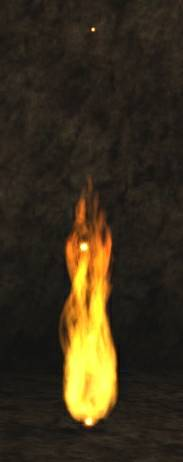
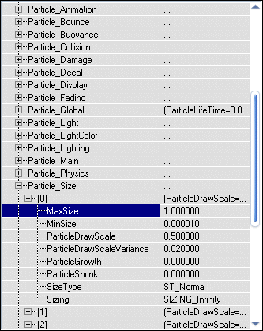

Raven/RParticles
RParticles v. 1.2
RParticles is advanced particle engine for UT'99. It's written only in Unreal Script and therefore it works on Linux, Mac and Windows.
- Up to 16 different templates in one Particle Emitter
- Can fade in/out
- 5 different states (TriggerControl/TriggerTurnsOff/TriggerTurnsOn/TriggerToggle/TriggeredBlast) in ExtendedEmitter
- 2 different selection methods
- 2 different burst methods
- Collision detection
- Performance mode
- Available version for Unreal 1 (tested on 226 and 225f)
- Much more

Class tree:
- Actor
- ParticleSystem - holds everything together
- BasicParticle - particle class
- EmitterCombiner - Emitter Combiner is used for merging many emitters into one effect
- Force - affects BasicParticle velocity (not ParticleEmitter)
- ParticlePath - changes BasicParticle Destination
- ParticleAlter - affects ParticleEmitter configurations (particles velocity)
- ParticleAnimationStorage - stores animation info for particles (for coders)
- UT2k4FireAnimations - animations for UT2k4Fire2
- ParticleEmitter
- ExtendedEmitter - extended version of ParticleEmitter. Contain working states
- WeaponEmitter - emitter for weapon effects. Can be destroyed.
- FireEmitter - holds fire effects together
- UT2k4Fire - fire preset form UT 2004
- UT2k4Fire2 - fire preset from UT 2004 (with ParticleAnimationStorage)
- ParticleTest - sample particles
- Sample1
- Sample2
- Sample3
- ParticleSystem - holds everything together

Simple Torch created using RParticles ![[RParticles]](img/RParticles.jpg) UT2k4 and UT'99 emitter 
UED shot |
UT'99 version download link:  Zipfile: RParticles.zip (tested on 436).
Zipfile: RParticles.zip (tested on 436).
Unreal 1 download link:  Zipfile: RParticlesU1.zip (tested on 226 and 225f, version 1.0 !! version 1.2 available soon).
Zipfile: RParticlesU1.zip (tested on 226 and 225f, version 1.0 !! version 1.2 available soon).
Archive content:
- RParticles.u
- 3 samples and 2 working fire templates included
- Help file
Version history:
- v. 1.2
- ParticleEmitter is now fully ClientSide.
- States TriggerControl/TriggerTurnsOff/TriggerTurnsOn/TriggerToggle/TriggeredBlast was moved to ExtendedEmitter because of replication which was required in order to make this states work
- WeaponEmitter for any effects which have to be spawned/destroyed during game (like Explosions, etc.)
- v. 1.1 (unreleased)
- new Particle_EffectArea[16] struct to override defult spawn area
- new Particle_Mesh[16] struct which allows to play animations while bUseMesh in Particle_Display[16] is true
- new Particle_Destination[16] struct which gives ability to decide about optional destination
- new ParticlePath actor used to give particles specified path (can be used only if DestinationType != DEST_None)
- new features in Force actor
- few optimizations in replication block
- v. 1.0
- few optimizations
- fixed critical error which in some situations can lead to crash !!
- v. 0.9.0.8
- added new, advanced, velocity functions (Particle_InvertVelocity[16] inside ParticleEmitter)
- v. 0.9.0.7
- optimized ParticleEmitter.uc
- optimized BasicParticle.uc
- v. 0.9.0.6
- added new EmitterCombiner.uc actor
- v. 0.9.0.5
- added new ESizing enum. It describes whenever particle should shrinks/grows endlesly or stop when it reaches specifed size
- v. 0.9.0.4
- added new srtucture: SSize where all size related variables was moved (ParticleDrawScale/ParticleDrawScaleVariance/ParticleGrowth)
- new option, which allow to cyclically changing particle size (shrinking/and growing), has beed added
- new sample (Sample3.uc) which shows cyclically changing particle size
- few smaller or bigger improvements
- v. 0.9.0.3
- added new global setting which can be forced to use instead of template Particle_Main.
- v. 0.9.0.2
- fixed bug in TriggeredBlast state in ParticleEmitter.uc
- added ParticleAnimationStorage.uc to store animation info (override strange bug with static array in an static array of structures).
- added Force.uc actor to change particle velocity (affect only this particles that touches it)
- new icons
- v. 0.9.0.1
- added new presets (UT2k4Fire/UT2k4Fire2)
- few changes in ParticleEmitter.uc